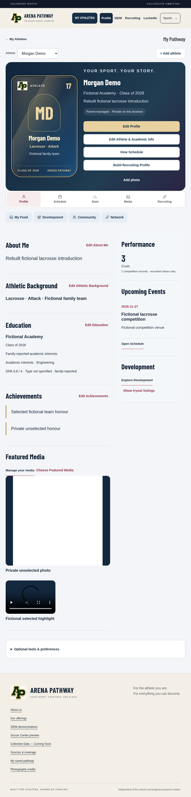
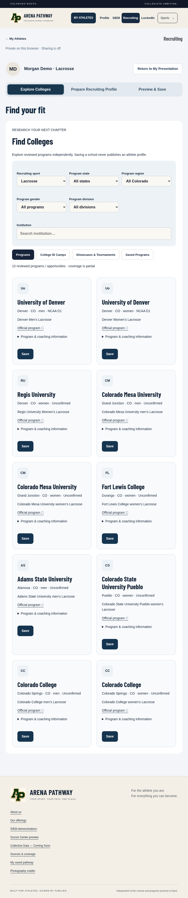
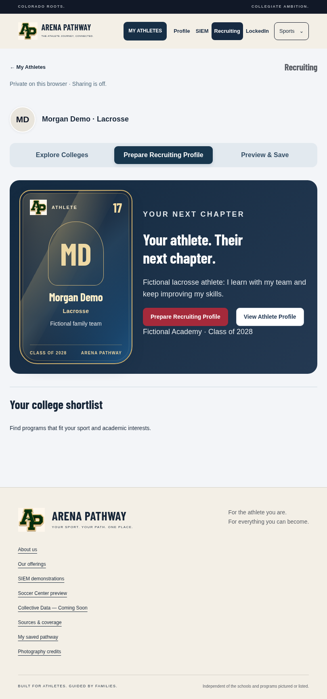

Source HEAD11de067414e63c5d3e3e221dfc14cc026dfbd8d0 verified against remote. Fresh actual public SC renders and browser navigation are in reference/. The older coach-card capture is explicitly dated and source-matched. source-to-target contract · current browser readback. Public synthetic demos are genuine reference components, not evidence of an authenticated production session.
Player/profile hierarchy
Actual SC public synthetic player/profile. AP preserves identity, school, About/achievements and tactical resources, and implements the specifically requested original gold identity. This is not authenticated production parity.
Soccer Center — actual rendered reference Arena Pathway — actual corrected experience
Arena Pathway — actual corrected experience
College research
Existing SC research tabs/filter/program hierarchy is the functional reference. AP uses only its verified sport-specific programs and honest missing-contact status, never soccer contacts for another sport.
Soccer Center — actual rendered reference Arena Pathway — actual corrected experience
Arena Pathway — actual corrected experience
Information and composition
Actual SC public builder is a form with independent information and sharing behavior. AP reuses the canonical contracts and strict projection, with focused profile editing and one responsive selection panel. No second builder or checkbox-first landing.
Soccer Center — actual rendered reference Arena Pathway — actual corrected experience
Arena Pathway — actual corrected experience
Finished portfolio
Left is the actual November16 rendered public SC synthetic coach card at the unchanged source HEAD11de067, not a reconstructed fixture. Right is current AP. Both conditionally render selected identity, academics, results, highlights and appearances; AP uses the approved original gold direction.
Soccer Center — actual rendered reference Arena Pathway — actual corrected experience
Arena Pathway — actual corrected experience
Authentication boundary
Protected SC parent editing redirects to sign-in. We do not manufacture screenshots of authenticated production or claim private production journeys were browser-tested. AP remains browser-local and clearly labeled.
Soccer Center — actual rendered reference Arena Pathway — actual corrected experience
Arena Pathway — actual corrected experience
Internal visual gates assess the visible gold identity, clear hierarchy, one primary workflow, actual inline portfolio and consistent touch/spacing. Premium quality remains a founder judgement; no enterprise/production or physical-device certification is claimed. Soccer Center is unchanged.